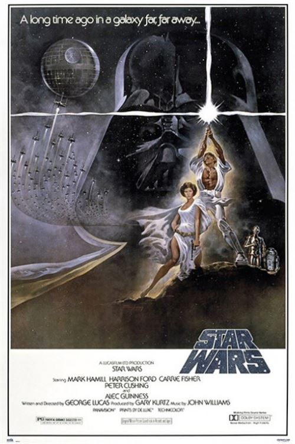
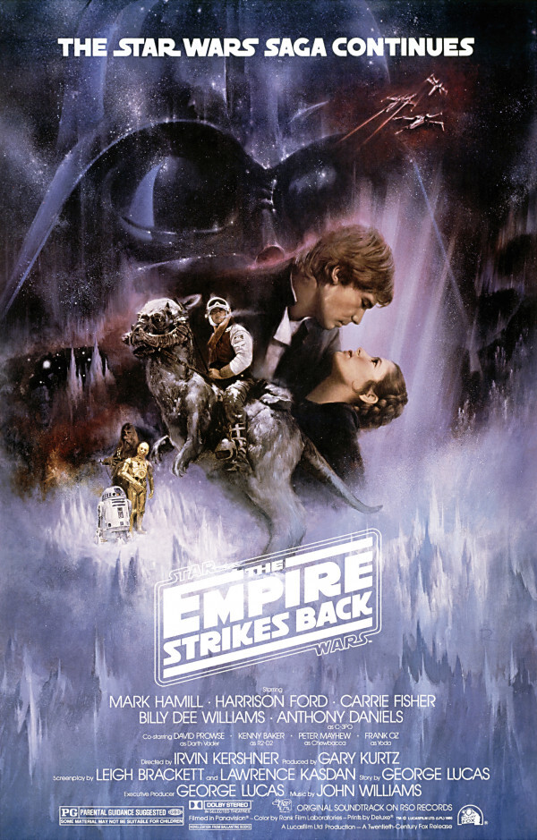
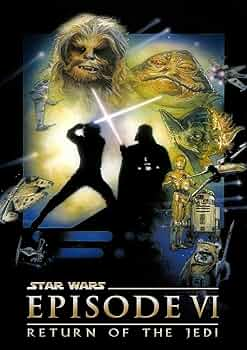

Trilogie
Épisode IV, V, VI
Star Wars, épisode IV : Un nouvel espoir

- Titre original:
- Star Wars: Episode IV – A New Hope
- Réalisation:
- George Lucas
- Scénario:
- George Lucas
- Musique:
- John Williams
- Sociétés de production:
- Lucasfilm Ltd
- Twentieth Century Fox
- Genre:
- Science-fiction
- Durée:
- 121 minutes
- Sortie:
- 1977
Synopsis
"Star Wars, épisode IV : Un nouvel espoir" se déroule dans une galaxie lointaine où l'Empire galactique, dirigé par l'impitoyable Dark Vador et l'empereur Palpatine, règne en opprimant les systèmes planétaires. La princesse Leia Organa cache les plans de l'Étoile de la Mort, une station spatiale destructrice, dans le droïde R2-D2, qui s'échappe avec son compagnon C-3PO vers la planète désertique Tatooine. Là-bas, les droïdes rencontrent Luke Skywalker, un jeune fermier, et le vieux Jedi Obi-Wan Kenobi. Ils se lancent dans une quête pour livrer les plans à l'Alliance rebelle, luttant contre l'Empire. Luke découvre sa destinée de Jedi et rejoint Han Solo, le contrebandier, et Chewbacca, le Wookiee, pour sauver la princesse Leia. Le groupe s'infiltre dans l'Étoile de la Mort pour sauver Leia et détruire la station. Avec l'aide d'Obi-Wan, Luke parvient à utiliser la Force pour détruire l'Étoile de la Mort, marquant une victoire cruciale pour l'Alliance rebelle et ouvrant la voie à l'espoir dans la lutte contre l'Empire.Star Wars, épisode V : L'Empire contre-attaque

- Titre original:
- Star Wars : Episode V – The Empire Strikes Back
- Réalisation:
- Irvin Kershner
- Scénario:
- Leigh Brackett
- Lawrence Kasdan
- Musique:
- John Williams
- Sociétés de production:
- Lucasfilm Ltd
- Genre:
- Science-fiction
- Durée:
- 124 minutes
- Sortie:
- 1980
Synopsis
"Star Wars, épisode V : L'Empire contre-attaque" se déroule après la victoire de l'Alliance rebelle contre l'Étoile de la Mort. L'Empire galactique, dirigé par Dark Vador et l'empereur Palpatine, traque les rebelles à travers la galaxie. Pendant ce temps, sur la planète glaciale de Hoth, l'Alliance rebelle établit une base secrète. Luke Skywalker poursuit son entraînement Jedi avec le maître Yoda sur la planète isolée de Dagobah, tandis que Han Solo, la princesse Leia, Chewbacca et C-3PO tentent d'échapper à la capture par les forces impériales. Pendant une confrontation avec Dark Vador, Luke découvre une vérité choquante sur son passé. L'Empire intensifie sa chasse aux rebelles, menant à la bataille de Hoth. Les héros se séparent : Han et Leia cherchent refuge auprès de Lando Calrissian, un ancien ami de Han, tandis que Luke se rend sur Bespin pour sauver ses amis, tombant dans un piège tendu par Vador. Sur Bespin, Luke affronte Vador dans un duel épique et découvre la véritable identité de son ennemi. Malgré sa bravoure, Luke est blessé et perd une main avant de découvrir la vérité sur son lien familial avec Dark Vador. L'épisode se termine sur une note sombre avec la capture de Han Solo par Vador et la compréhension que l'Empire est loin d'être vaincu.Star Wars, épisode VI : Le Retour du Jedi

- Titre original:
- Star Wars: Episode VI – Return of the Jedi
- Réalisation:
- Richard Marquand
- Scénario:
- Lawrence Kasdan
- George Lucas
- Musique:
- John Williams
- Sociétés de production:
- Lucasfilm Ltd
- Genre:
- Science-fiction
- Durée:
- 134 minutes
- Sortie:
- 1983